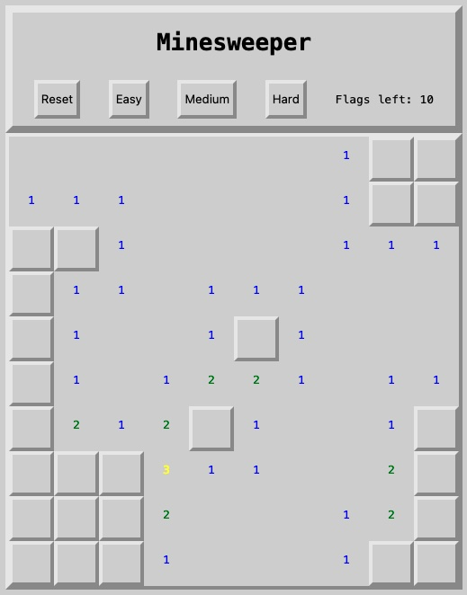

Last updated: Sun Oct 22 2023 | Permalink | RSS
How to make Minesweeper part 3
This is the final part of this 3-part series! I recommend starting with part 1 and also working through part 2 before moving on to this one. If you have already worked through parts 1 and 2, welcome back! In the previous parts, we built a board of 100 squares with variable amount of bombs depending on the difficulty, randomized them around the board, and gave the player ways to find those bombs. In this part we will finish the gameplay, including adding the win condition and styling the board to look nice.
Show all bombs when one is clicked
Another feature of Minesweeper is that when the player clicks a bomb, we want to show them all the bombs so that they can see where they made their mistake. So in handleClick let's add the following to our if (squareObj.classList.contains("bomb")) block between setting isGameOver to true and setting the clicked bomb to an explosion:
const bombs = document.querySelectorAll(".bomb");
bombs.forEach((bomb) => {
bomb.innerHTML = "💣";
bomb.classList.add("clicked");
});
The document.querySelectorAll method is pretty powerful. It takes a CSS selector string as an argument (e.g. .clicked for the clicked class, p for paragraph elements) and returns a NodeList which acts kind of like an array and has many of the same methods and properties as an array like .length and .forEach().
We want to use the .forEach() method to both set set each bomb square to show a bomb emoji and to add the "clicked" class for styling later. We want to add the above code before setting the square-that-was-clicked to an explosion so that we don't overwrite that explosion when we set all the bombs to bomb emojis.
Let's refresh and check and immediately click a bomb to see all the bombs show up and to see the one we clicked explode!

Add feature to place flag
Finally we can start making it so the player can actually win the game! In minesweeper, the player can click to see how many bombs are nearby. But once they think they know where a bomb is, they can right-click to place a flag. The flag tells the player where they already think bombs are and to help them no click on them. And for us, we can keep track of them later to let us know when the player has found them all!
But first, let's allow the player to right-click the squares at all. We'll start by adding a function after the handleClick function:
const handlePlaceFlag = (squareObj) => {
if (isGameOver) return;
if (!squareObj.classList.contains("clicked")) {
squareObj.innerHTML = squareObj.classList.contains("flag") ? "🚩" : "";
squareObj.classList.toggle("flag");
}
};
The above function makes sure the game is not over, makes sure the square that was right-clicked has not already been clicked, and then fills in the appropriate text and class. This function as written will add a flag if there isn't one and will remove a flag if there is one.
We are using a ternary operator to set the square.innerHTML. If you haven't seen these before the following phrases work the same:
// With ternary operator
squareObj.innerHTML = squareObj.classList.contains("flag") ? "🚩" : "";
// With if/else
if (squareObj.classList.contains("flag")) {
squareObj.innerHTML = "🚩"
} else {
squareObj.innerHTML = ""
}
Now that we have our function, we can call it with a new event listener. Add the following after the click event listener in createBoard:
square.addEventListener("contextmenu", () =>
handlePlaceFlag(square)
);
"contextmenu" is the event that is called with the player right-clicks. When we refresh and check, we can now add and remove flags whenever. Except that the actual context menu (the right-click menu) is getting in the way! We can prevent that by adding the event as an argument to handlePlaceFlag. So let's change the anonymous callback we just added to be:
square.addEventListener("contextmenu", (e) => handlePlaceFlag(e, square));
We don't have to call the event e, but that is a pretty established pattern that other developers will also understand. Also we do have to use the e argument before the square argument, this is an odd JavaScript thing, but it is required. Now let's add the e to the handlePlaceFlag parameters which should now look like:
const handlePlaceFlag = (e, squareObj) => {
And then before anything else in the handlePlaceFlag function we'll add e.preventDefault(); This is a great little method that helps us stop that context menu from appearing.
Now another refresh and check will let us place and remove flags as much as we want. No menus in the way anymore.

Make it so only finite flags can be placed
Now we are able to place flags, but we are able to place infinite flags. This does not make for very fun gameplay so we should limit the amount of flags to the amount of bombs on the field. This way if the player has placed 10 flags and there are 10 bombs, but they haven't won, then it lets them know that one or more of their flags are misplaced.
Similar to adding our difficulty levels above, let's first create a DOM element to place our number. Let's place it between the buttons and the board:
<p id="flagCounter">Flags left:</p>
Next we'll grab with with document.getElementByID calling this in a similar place to our other document calls:
const flagCounter = document.getElementById("flagCounter");
We want this element to update each time a flag is removed or placed and when the game updates. So we will need to have a variable that keeps track of how many flags are left, functionality to change that value when necessary, and a function to update the DOM element whenever the variable is changed.
Let's start by adding let flagsLeft = bombCount[diffculty]; up in our constants and variables at the top of the JS file (It can go anywhere in that block as long as it's after both bombCount & difficulty).
Next we'll add an updateFlagCounter function above our resetGame function:
const updateFlagCounter = () => {
flagCounter.innerHTML = `Flags left: ${flagsLeft}`;
};
And then within resetGame, before we build our array of square values, we'll also reset the flagsLeft and update the flagCounter:
flagsLeft = bombCount[difficulty];
updateFlagCounter();
Finally, we will change our handlePlaceFlag logic. When the player right-clicks, a flag should only be placed if:
- they right click an unclicked square
- AND there are flags left to place And they should only be removed if that square has a flag to remove.
In both scnarios we want to show the right icon in the square, add or remove the "flag" class, increment or decrement the flagsLeft, and update the flagCounter. But if has no flag and there are no more flags we want to do nothing. So in this case we'll actually remove the ternary operator and classList.toggle method and add the following in their place:
if (squareObj.classList.contains("flag")) {
squareObj.innerHTML = "";
squareObj.classList.remove("flag");
flagsLeft++;
updateFlagCounter();
} else if (flagsLeft > 0) {
squareObj.innerHTML = "🚩";
squareObj.classList.add("flag");
flagsLeft--;
updateFlagCounter();
}
Now when we refresh and check, we should be able to place 10 flags anywhere but not an 11th flag. We should also be able to remove flags once they have been placed. For each addition or removal, the counter above the board should display the correct amount of flags remaining.

Add win condition
One last bit of functionality we need to add is the ability for the player to win the game (and for us to tell them). There are two win conditions:
- the player places a flag correctly on each bomb
- the player clears all of the non-bomb spaces without hitting a bomb first?
So there are two values we want to check:
- How many squares have both the "bomb" and "flag" classes?
- How many squares have the "clicked" class
So for this a great way to check the classes of the squares is to once again use document.querySelectorAll() to check the entire document for those values. As above, document.querySelectorAll() receives one argument of a CSS Selector string and returns a NodeList that behaves very similarly to an array. For the values we want to grab, we can use the .length property to figure out how many of each type we have.
But to make it very obvious the player has won, we'll take advantage of the .forEach() method to change the board to be fully revealed and show all the squares.
So we need a function that will check that at least one of our two win conditions is met and then change the board to show the player they won. Let's add a checkForWin function after the resetGame function:
const checkForWin = () => {
const flaggedBombsCount = document.querySelectorAll(".flag.bomb").length;
const clickedCount = document.querySelectorAll(".clicked").length;
if (
flaggedBombsCount === bombCount[difficulty] ||
clickedCount === boardSize - bombCount[difficulty]
) {
isGameOver = true;
document.querySelector("h1").innerHTML = "You win!";
document.querySelectorAll(".bomb").forEach((b) => (b.innerHTML = "💣"));
document
.querySelectorAll("#board p")
.forEach((p) => p.classList.add("clicked"));
}
};
And you can see above, since we want to check for both the "flag" and "bomb" classes, we can use .flag.bomb, which for CSS reads as "flag class AND bomb class". But then lower down since we only want to grab p elements that are inside the board (specifically to exclude the flag counter element), we we #board p which reads to CSS as "paragraphs IN the board ID". I strongly recommend learning how CSS selectors work because it's pretty powerful. But also this is a great CSS selector reference resource for you to look through to see all the neat tricks.
The last thing we have to do then is to call checkForWin in both places where the player interacts with the board to see if that interaction won or lost the game. So well add those calls to the end of both the handlePlaceFlag and handleClick functions.
Now when we refresh and check we should be able to flag each bomb and trigger a win, and then reset the game and click each of the non-bomb squares and trigger a win. And now we have a fully playable Minesweeper game!

Style the board
Before we're done though we should make the game look good. We have all of our functionality together but we are still revealing where the bombs are and do want to make our game look attractive.
Aesthetically, I wanted to imitate some early looks of the game, but also I wanted to have a chiseled stone look similar to an old chess game my grandmother had on her computer in the late nineties.
Note: Like I said above, CSS invokes the fear of the ancients in many developers, but it really is a powerful thing to learn. Even if you mostly use component libraries like Bootstrap or Tailwind, understanding CSS means you will understand how those components work "under the hood" and how best to interact with those libraries' APIs.
The first things we will change is to remove out current .clicked and .bomb blocks. They only existed for us to test the game with but don't really contribute to the look of the game. And now let's make our #board block look like:
#board {
width: 500px;
margin: 0 auto;
display: flex;
flex-flow: row wrap;
border-top: 4px solid lightgray;
border-right: 4px solid gray;
border-bottom: 4px solid gray;
border-left: 4px solid lightgray;
}
The border attribute (as well as other box model striibutes like padding) can be broken out into its individual sides. This lets us color and size the sides individually and in this case let's us create a faux-shadow effect that looks like of like a flat-topped pyramid.
Next we want to style each of our squares. The squares are all p elements in the board so we can use the same selector we want our existing #board p block to look like this:
#board p {
width: 42px;
height: 42px;
margin: 0;
padding: 0;
line-height: 42px;
text-align: center;
background-color: darkgray;
border-top: 4px solid lightgray;
border-right: 4px solid gray;
border-bottom: 4px solid gray;
border-left: 4px solid lightgray;
}
It was noted towards the beginning of the project that borders, margin, and padding add to the width and to keep the squares only 50 pixels wide so we have to subtract both sides' border and from the width and line-height. In this case the borders will also give a faux-shadow look for each of the squares.
Finally we want to re-add a .clicked block to show a clear difference when the squares are clicked. So let's add a #board .clicked block:
#board .clicked {
width: 50px;
height: 50px;
border: none;
}
So now when we refresh and check, the board should appear like raised stone except when we click on a square and then clicked squares should appear flat. Also this is the first time we're seeing the game as a fully-working game where you aren't shown where all the bombs are at the start. So now is a good time to test the game and check over how it's playing in full.

Color the numbers
Another feature of most Minesweeper implementations is color-coding the different numbers to see the "urgency" of squares at a glance, but also I have a bias towards color-coding because it helps my particular way of thinking. This will require adding a little more JavaScript to set those colors with more classes.
So back in our app.js file, let's add a little extra code to our checkNeighbors function starting with a new constant after the neighborEdgesAndIndexes:
const numberClasses = [
"one",
"two",
"three",
"four",
"five",
"six",
"seven",
"eight",
];
Then at the bottom inside our if (count > 0) block, we will add squareObj.classList.add(numberClasses[count - 1]);. CSS classes don't like to start with numbers so we want to manually set the classes with the number words instead. Once we've set these classes we can update our CSS:
.one {
color: blue;
}
.two {
color: green;
}
.three {
color: yellow;
}
.four {
color: darkorange;
}
.five {
color: red;
}
.six {
color: purple;
}
.seven {
color: pink;
}
.eight {
color: blue;
}
When we refresh and check the game, if we find as many number as we can we can see the different number colors. The top half of the numbers are pretty rare, but you can also edit the classes in the Elements inspector so that you can check the different classes are working (and whether or not you like the colors.)

Finish styling rest of game
Now we have a pretty well put together game and just need to add some polish. To better accomplish this, we'll rearrange our HTML a little bit:
<body>
<header>
<h1>Minesweeper</h1>
<nav>
<button id="reset">Reset</button>
<button id="easy">Easy</button>
<button id="medium">Medium</button>
<button id="hard">Hard</button>
<p id="flagCounter">Flags left:</p>
</nav>
</header>
<main>
<div id="board"></div>
</main>
<script src="app.js"></script>
</body>
Now we have some specific elements to grab and arrange better. Next we'll change our CSS file to look like:
:root {
--highlight: rgba(255, 255, 255, 0.5);
--lowlight: rgba(0, 0, 0, 0.3);
}
html {
font-family: monospace;
background-color: lightgray;
}
header {
width: 492px;
margin: 0 auto;
border-top: 8px solid var(--highlight);
border-right: 8px solid var(--lowlight);
border-bottom: 8px solid var(--lowlight);
border-left: 8px solid var(--highlight);
}
h1 {
text-align: center;
}
nav {
display: flex;
flex-flow: row nowrap;
justify-content: space-around;
width: 476px;
margin: 0 auto;
padding: 8px;
}
nav button {
border-radius: 0;
background-color: transparent;
border-top: 4px solid var(--highlight);
border-right: 4px solid var(--lowlight);
border-bottom: 4px solid var(--lowlight);
border-left: 4px solid var(--highlight);
}
nav button:hover {
background-color: var(--lowlight);
}
nav button:active {
border-top: 4px solid var(--lowlight);
border-right: 4px solid var(--highlight);
border-bottom: 4px solid var(--highlight);
border-left: 4px solid var(--lowlight);
}
.one {
color: blue;
}
.two {
color: green;
}
.three {
color: yellow;
}
.four {
color: darkorange;
}
.five {
color: red;
}
.six {
color: purple;
}
.seven {
color: pink;
}
.eight {
color: blue;
}
#board {
width: 500px;
margin: 0 auto;
display: flex;
flex-flow: row wrap;
cursor: pointer;
border-top: 4px solid var(--highlight);
border-right: 4px solid var(--lowlight);
border-bottom: 4px solid var(--lowlight);
border-left: 4px solid var(--highlight);
}
#board p {
width: 42px;
height: 42px;
margin: 0;
padding: 0;
line-height: 42px;
text-align: center;
border-top: 4px solid var(--highlight);
border-right: 4px solid var(--lowlight);
border-bottom: 4px solid var(--lowlight);
border-left: 4px solid var(--highlight);
}
#board p:active {
border-top: 4px solid var(--lowlight);
border-right: 4px solid var(--highlight);
border-bottom: 4px solid var(--highlight);
border-left: 4px solid var(--lowlight);
}
#board .clicked {
width: 50px;
height: 50px;
border: none;
}
#board .clicked:active {
border: none;
}
And we'll go through what that changes from top to bottom. If you refresh and check, you can see the changes as you read about them below:
At the very top with the :root block we set some custom colors that add a somewhat transparent highlight or shadow to the borders instead of using lightgray and gray. That transparency will also help later if we want to set different background colors to the game.
Speaking of in the html block we set a new background-color attribute. Doing so at this level sets that color for the whole page (with some exceptions, elements have a transparent background by default). Also you can change the background-color to any color you like and the board will now still create realistic(-ish) looking shadows since the custom colors are just lightly-transparent white and black. Try some colors out!
Next we add a header block to get the page's header to match the decor of the game board. The notable change here is that we are using the var() function to set our custom colors from the :root block.
Now we move on to the nav where we want to use Flexbox to arrange the buttons as a row with space around them. The buttons are one of those rare elements that come with some default styling. So to get them to match the styling pattern we've been using so far, we have to undo the border-radius & background-color. The other attribute that has a default is the border, but we want to style that anyway so that's taken care of.
The buttons have some :hover and :active state defaults as well. But also if we switch the colors of the border segments while the player is clicking (aka: the element is :active), the shadow appears to invert creating an illusion that the button is now concave. We'll also visit these with the squares in a second.
Most of the rest of the changes are switching the border colors to use the custom colors and use the transparency that comes with them. Notably we also are adding an :active state to the squares that also invert the border colors and help make the squares look "pressed in" when the player clicks on them.
And finally the last change here is to set an :active state for the .clicked squares that takes away the border so that there is no difference than the regular .clicked squares. If the player clicks a square that is otherwise unclickable, but responds as if it should be doing something that will confuse the player.

Conclusion
We have a fully working game built entirely in native web tooling. This is just a static page that takes very little data to store or run (about 78 kilobytes as built here)! Web pages are pretty powerful and (while sometimes opaque or obtuse) the JavaScript and CSS can do a lot with very little.
Lately I have found myself interested in permacomputing principles and one of the principles is to "Keep it small". Making pages smaller also helps users use less resources to play your games or visit your sites, and to put less burdern on the user to "keep up" with system requirements for more and more complex games and sites. As I continue building out more tutorials, this is going to be a driving part of how I design projects. Small games like this will be similarly complex, but even more complex works will be designed to use as few dependencies and power as possible.
Thanks for following along with this tutorial! Find more of my projects and writing at my portfolio and blog.
Thank you for reading! Please consider supporting this blog.